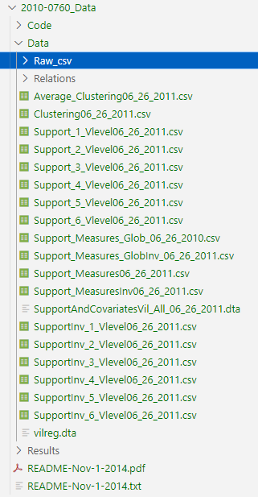
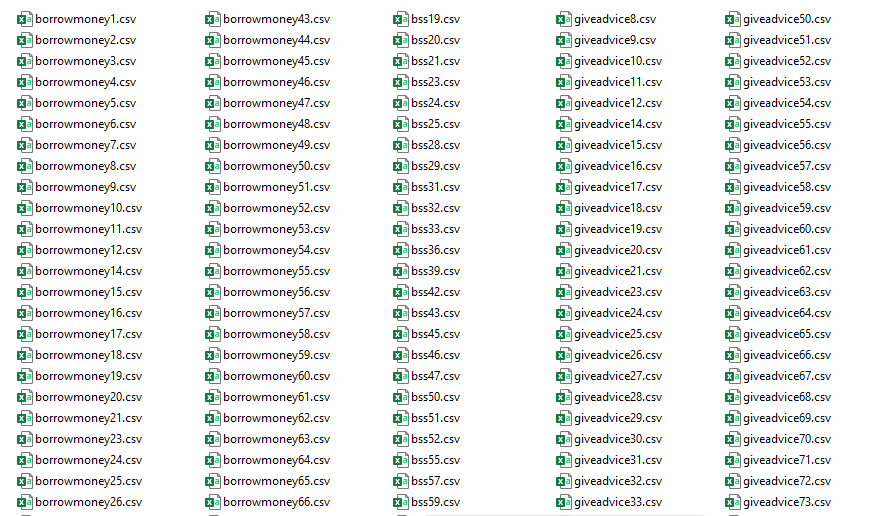
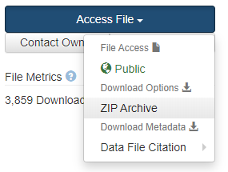

💻 Tutorial 01: Preparing your data for VIMuRe in python
VIMuRe v0.1.0 (latest)
If you use VIMuRe in your research, please cite (De Bacco et al. 2023).
TLDR: By the end of this tutorial, you should produce a data frame in the following format:
| respondent | i | j | tie_type | weight |
|---|---|---|---|---|
| 100201 | 107603 | 100201 | borrowmoney | 1 |
| 100202 | 100201 | 100202 | borrowmoney | 1 |
| 100601 | 101901 | 100601 | borrowmoney | 1 |
| 100601 | 102601 | 100601 | borrowmoney | 1 |
| 100601 | 115501 | 100601 | borrowmoney | 1 |
| 100602 | 100501 | 100602 | borrowmoney | 1 |
Introduction
Before you start using VIMuRe, you need to prepare your data in a specific format. This tutorial will show you how to do that.
Here, we will illustrate the process of preparing data for the VIMuRe package using the “Data on Social Networks and Microfinance in Indian Villages” dataset (Banerjee et al. 2013b). This dataset contains network data on 75 villages in the Karnataka state of India.
⚙️ Setup
We will rely on the following packages in this tutorial:
import os
import pandas as pdStep 1: Download edgelist
Follow the steps below to download the data.
- Click on [https://www.stanford.edu/~jacksonm/IndianVillagesDataFiles.zip) to download the dataset from Prof. Matthew O. Jackson’s website [^1]. This will download a file called
IndianVillagesDataFiles.zipin your working directory. - Unzip the file. This will create a folder called
2010-0760_Datain your working directory. 💡 Tip: you can use theunzip()function from within R to unzip the file.
The folder structure should look like this:

The data we need is within that Data/Raw_csv/ folder, and looks like this:

Step 2: Collect individual-level metadata
We also need individual-level information metadata. This data is available on a separate source, the Harvard Dataverse (Banerjee et al. 2013a).
- Go to https://dataverse.harvard.edu/file.xhtml?fileId=2460959&version=9.4, read and accept the “License/Data Use Agreement” to gain access to the data. We are using version 9.4 of the dataset.
- Click on the “Access File” button, then “Download | ZIP Archive” to download the data.

- Unzip the file. This will create a folder called
datav4.0.zipin your working directory.
The data we need is within that datav4.0/Data/2. Demographics and Outcomes/ folder.
- Read the data into Python using the
pd.read_stata()function from pandas:
indivinfo = pd.read_stata("datav4.0/Data/2. Demographics and Outcomes/individual_characteristics.dta")
indivinfo.drop_duplicates(subset=["pid"], inplace=True) ## one individual (6109803) is repeated twice.- Ensure that the
pidis a string (we will need this later):
indivinfo["pid"] = indivinfo["pid"].astype(str)
indivinfo["hhid"] = indivinfo["hhid"].astype(str)Step 3: Build an edge list per village
We will now build the edge list for each village. We will illustrate the process for village 1, but if you scroll down you will find the full script for all villages.
3.1. Read metadata
Let’s first subset the individual-level metadata to keep only the relevant village:
# Keep track of where the edgelist files are stored
RAW_CSV_FOLDER = "2010-0760_Data/Data/Raw_csv"
# Let's focus on just one village for now
selected_village = 1
# Filter the individual-level metadata to keep only the relevant village
resp = indivinfo[indivinfo["village"] == 1].copy()
resp["didsurv"] = 13.2. Read village data
Now, let’s read the village_1.csv file and merge it with the individual-level metadata:
village_file = os.path.join(RAW_CSV_FOLDER, f"village{selected_village}.csv")
indiv = pd.read_csv(village_file, header = None, names=["hhid", "ppid", "gender", "age"])
## gender (1-Male, 2-Female)
indiv["gender"] = indiv["gender"].map({1: "Male", 2: "Female"})
## pre-process pid to match the format in the individual-level metadata
indiv["ppid"] = indiv["ppid"].astype(str)
indiv["hhid"] = indiv["hhid"].astype(str)
indiv["pid"] = indiv.apply(lambda x: f'{x["hhid"]}{0 if len(x["ppid"]) != 2 else None}{x["ppid"]}', axis=1)
## Select only the relevant columns
selected_cols = ["pid", "resp_status", "religion", "caste", "didsurv"]
indiv = pd.merge(indiv, resp[selected_cols], on="pid", how="left")Which produces a dataframe that looks like this:
indiv.head()| hhid | ppid | gender | age | pid | resp_status | religion | caste | didsurv | |
|---|---|---|---|---|---|---|---|---|---|
| 0 | 1001 | 1 | Male | 75 | 100101 | nan | nan | nan | nan |
| 1 | 1001 | 2 | Female | 55 | 100102 | nan | nan | nan | nan |
| 2 | 1001 | 3 | Male | 24 | 100103 | nan | nan | nan | nan |
| 3 | 1001 | 4 | Female | 19 | 100104 | nan | nan | nan | nan |
| 4 | 1002 | 1 | Male | 38 | 100201 | Head of Household | HINDUISM | OBC | 1 |
3.3 Read reports per relationship type
The survey that produced this data collected information on a number of different types of relationships, four of which were “double sampled” (i.e., asked about in two ways, who people go to for that type of support, and who comes to them). Specifically, they asked about borrowing and receiving money, giving and receiving advice, borrowing and lending household items like kerosene and rice, and visiting and receiving guests. These distinct questions are represented in the data files with the following names:
- borrowmoney,
- receivemoney,
- helpdecision,
- receiveadvice,
- keroricego,
- keroricecome,
- visitgo,
- visitcome
Each of these relationships is stored in a separate file. For example, the file borrowmoney1.csv contains information on who reported borrowing money from whom in village 1.
We can read each of these files using the pd.read_csv() function. For example:
filepath_borrowmoney = os.path.join(RAW_CSV_FOLDER, f"borrowmoney{selected_village}.csv")
borrowmoney = pd.read_csv(filepath_borrowmoney, header=None, na_values=ALL_NA_CODES, dtype=str)The ALL_NA_CODES variable is a vector of all the codes that, after inspection, we identified were used to represent missing values in the data:
ALL_NA_CODES = ["9999999", "5555555", "7777777", "0"]What the data looks like
The data is stored here as a node list, but it will need to be further pre-processed as an edge list:
| 0 | 1 | 2 | 3 | 4 | 5 | 6 | 7 | 8 | |
|---|---|---|---|---|---|---|---|---|---|
| 0 | 100201 | 107603 | nan | nan | nan | nan | nan | nan | nan |
| 1 | 100202 | 100201 | nan | nan | nan | nan | nan | nan | nan |
| 2 | 100601 | 101901 | 102601 | 115501 | nan | nan | nan | nan | nan |
| 3 | 100602 | 100501 | 101902 | nan | nan | nan | nan | nan | nan |
| 4 | 100701 | 100801 | 102101 | nan | nan | nan | nan | nan | nan |
| 5 | 100702 | 100801 | 104001 | nan | nan | nan | nan | nan | nan |
Each row represents reports made by a single individual; the first number is the pid (the “person identifier”) of the individual who reported the relationship, whereas the remaining however many numbers listed in the same row are the pids of the individuals who were reported to be involved in the relationship.
3.4. Pre-process the data to build the edge list
We want the network data to be in the following format, plus a few additional columns:
| i | j |
|---|---|
| 100201 | 107603 |
| 100202 | 100201 |
| 100601 | 101901 |
| 100601 | 102601 |
| 100601 | 115501 |
| 100602 | 100501 |
| 100602 | 101902 |
| 100701 | 100801 |
| 100701 | 102101 |
| 100702 | 100801 |
To achieve this, we will need to pivot the data.
tie_type = "borrowmoney"
# Example with the borrowmoney data
df = pd.melt(borrowmoney, id_vars=[0]).dropna()This produces a bogus variable column, which we can drop. We should also rename the columns to something more meaningful. It is important that we add a respondent column. This will be the pid of the individual who reported the relationship.
df = df.drop(columns="variable")\
.rename(columns={0: "i", "value": "j"})\
.assign(respondent=lambda x: x["i"])
# Let's also add a column for the tie type
df = df.assign(tie_type=tie_type)
# Let's add a weight column too
df = df.assign(weight=1)Now, if the question was “Did you borrow money from anyone?”, then the i column should be the respondent, and the j column should be the person who was reported to have borrowed money from the respondent. However, if the question was “Did anyone borrow money from you?”, then the i column should be the person who was reported to have borrowed money from the respondent, and the j column should be the respondent. We can use the tie_type variable to determine which of these two scenarios applies.
if tie_type in ["borrowmoney", "keroricego", "visitgo"]:
df = df.rename(columns={"i": "j", "j": "i"})Let’s reorder the columns to guarantee we can rbind the data frames of all relationship tipes together later.
df = df[["respondent", "i", "j", "tie_type", "weight"]]which produces the following data frame:
df.head()| respondent | i | j | tie_type | weight | |
|---|---|---|---|---|---|
| 0 | 100201 | 107603 | 100201 | borrowmoney | 1 |
| 1 | 100202 | 100201 | 100202 | borrowmoney | 1 |
| 2 | 100601 | 101901 | 100601 | borrowmoney | 1 |
| 3 | 100602 | 100501 | 100602 | borrowmoney | 1 |
| 4 | 100701 | 100801 | 100701 | borrowmoney | 1 |
| 5 | 100702 | 100801 | 100702 | borrowmoney | 1 |
The above is the format we want the data to be in! This format will make it easier to work with VIMuRe.
Use the full pre-processing script below to pre-process all the data for all tie types and save it to a single vil1_edges.csv file. We also save the indiv data frame to a vil1_meta.csv file.
Click to see full pre-processing script
# village IDs 13 and 22 are missing
VALID_VILLAGE_IDS = [i for i in range(1, 77+1) if i != 13 and i != 22]
# codes for missing values
ALL_NA_CODES = ["9999999", "5555555", "7777777", "0"]
RAW_CSV_FOLDER = "2010-0760_Data/Data/Raw_csv"
for i in VALID_VILLAGE_IDS:
selected_village = i
## Read in the files that include details of each individual and of each sharing unit
resp = indivinfo[indivinfo["village"] == selected_village].copy()
resp["didsurv"] = 1
village_file = os.path.join(RAW_CSV_FOLDER, f"village{selected_village}.csv")
indiv = pd.read_csv(village_file, header=None, dtype=str)
indiv.columns = ["hhid", "ppid", "gender", "age"]
indiv["age"] = indiv["age"].astype(int)
## gender (1-Male, 2-Female)
indiv["gender"] = indiv["gender"].map({"1": "Male", "2": "Female"})
indiv["pid"] = indiv.apply(lambda x: f'{x["hhid"]}{x["ppid"]}'
if len(x["ppid"]) == 2
else f'{x["hhid"]}0{x["ppid"]}',
axis=1)
## Select only the relevant columns
selected_cols = ["pid", "resp_status", "religion", "caste", "didsurv"]
indiv = pd.merge(indiv, resp[selected_cols], on="pid")
## Read in the files that include details on each relationship
filepath_borrowmoney = os.path.join(RAW_CSV_FOLDER, f"borrowmoney{selected_village}.csv")
borrowmoney = pd.read_csv(filepath_borrowmoney, header = None, na_values = ALL_NA_CODES, dtype=str)
filepath_receivemoney = os.path.join(RAW_CSV_FOLDER, f"lendmoney{selected_village}.csv")
receivemoney = pd.read_csv(filepath_receivemoney, header = None, na_values = ALL_NA_CODES, dtype=str)
filepath_giveadvice = os.path.join(RAW_CSV_FOLDER, f"giveadvice{selected_village}.csv")
receiveadvice = pd.read_csv(filepath_giveadvice, header = None, na_values = ALL_NA_CODES, dtype=str)
filepath_helpdecision = os.path.join(RAW_CSV_FOLDER, f"helpdecision{selected_village}.csv")
helpdecision = pd.read_csv(filepath_helpdecision, header = None, na_values = ALL_NA_CODES, dtype=str)
filepath_keroricecome = os.path.join(RAW_CSV_FOLDER, f"keroricecome{selected_village}.csv")
keroricecome = pd.read_csv(filepath_keroricecome, header = None, na_values = ALL_NA_CODES, dtype=str)
filepath_keroricego = os.path.join(RAW_CSV_FOLDER, f"keroricego{selected_village}.csv")
keroricego = pd.read_csv(filepath_keroricego, header = None, na_values = ALL_NA_CODES, dtype=str)
filepath_visitcome = os.path.join(RAW_CSV_FOLDER, f"visitcome{selected_village}.csv")
visitcome = pd.read_csv(filepath_visitcome, header = None, na_values = ALL_NA_CODES, dtype=str)
filepath_visitgo = os.path.join(RAW_CSV_FOLDER, f"visitgo{selected_village}.csv")
visitgo = pd.read_csv(filepath_visitgo, header = None, na_values = ALL_NA_CODES, dtype=str)
tietypes <- {"borrowmoney": borrowmoney,
"receivemoney": receivemoney,
"helpdecision": helpdecision,
"receiveadvice": receiveadvice,
"keroricego": keroricego,
"keroricecome": keroricecome,
"visitgo": visitgo,
"visitcome": visitcome}
edges = []
for selected_tie_type, df_tie in tietypes.items():
df = pd.melt(df_tie, id_vars=[0]).dropna()
df = df.drop(columns="variable")\
.rename(columns={0: "i", "value": "j"})\
.assign(respondent=lambda x: x["i"])
# Let's also add a column for the tie type
df = df.assign(tie_type=selected_tie_type)
# Let's add a weight column too
df = df.assign(weight=1)
if tie_type in ["borrowmoney", "keroricego", "visitgo"]:
df = df.rename(columns={"i": "j", "j": "i"})
df = df[["respondent", "i", "j", "tie_type", "weight"]]
edges.append(df)
edges = pd.concat(edges)
edges.to_csv(f"vil{i}_edges.csv", index=False)
indiv.to_csv(f"vil{i}_meta.csv", index=False)